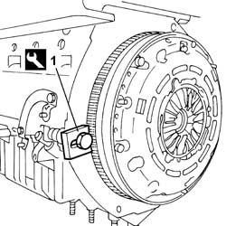
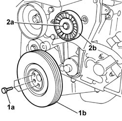
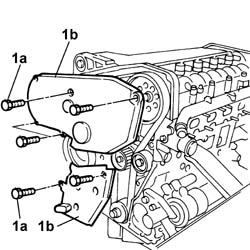
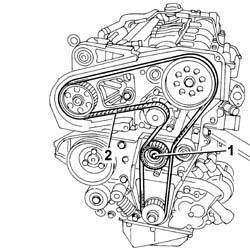
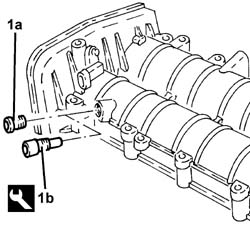
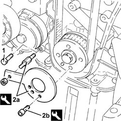
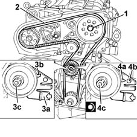

1032B16 TOOTHED TIMING BELT - R.R. WITH ENGINE REMOVED
- Path
- Procedures > 10 ENGINE > 1032 TIMING SYSTEM > 1032B BELT TIMING SYSTEM > 1032B16 TOOTHED TIMING BELT - R.R. WITH ENGINE REMOVED
- Kind
- repair procedure (removal / refitting; the operation number is the code)
- Applies to
- engines: 2.4 JTD 20v; all production periods
- Interactive page
- https://sloeber94.github.io/elrnDB-aBrrSpdr/en/#/946002955
Applies to: engines: 2.4 JTD 20v; all production periods
 Removing
Removing
 Refitting
Refitting1. Position the flywheel retaining tool in its seat.
Description | Code | Function | |
|---|---|---|---|
1 | Flywheel lock | 1.860.846.001 | Prevent the rotation of the crankshaft |

Applies to: engines: 2.4 JTD 20v; all production periods
1. Undo bolts (1a) securing crankshaft pulley (1b) and remove.
2. Undo the fixing bolt (2a) and remove the single drivebelt fixed tensioner (2b).

Applies to: engines: 2.4 JTD 20v; all production periods
1. Undo bolts (1a) and remove the protective timing covers (1b).

Applies to: engines: 2.4 JTD 20v; all production periods
1. Loosen the moving timing tensioner nut.
2. Remove the toothed timing belt.

Applies to: engines: 2.4 JTD 20v; all production periods
Refitting
Removing1. Remove plug (1a) and fit camshaft timing tool (1b) to the cylinder head extension.
Description | Code | Function | |
|---|---|---|---|
1b | Templates | 1.870.896.900 | Engine tuning |

Applies to: engines: 2.4 JTD 20v; all production periods
1. Undo the bolt fixing the crankcase front cover shown in the diagram.
Temporarily fit the toothed timing drive belt on the drive pulley.
2. Fit the tool (2a) and fasten it using the calibrated screw (2b).
Description | Code | Function | |
|---|---|---|---|
2a | Template | 1.860.905.000 | Engine tuning |
Description | Code | Function | |
|---|---|---|---|
2b | Calibrated screw | 1.860.905.010 | Engine tuning |

Applies to: engines: 2.4 JTD 20v; all production periods
2. Fully fit the toothed timing drive belt.
3. Use a screwdriver on the tensioner (3a) tab for leverage until the reference (3b) is in the maximum tension position, then lock the nut (3c) fixing the moving tensioner in this position.
- Remove the tools used to adjust the timing.
Description | Code | Function | |
|---|---|---|---|
. | Templates | 1.870.896.900 | Engine tuning |
Description | Code | Function | |
|---|---|---|---|
. | Template | 1.860.905.000 | Timing belt timing |
Description | Code | Function | |
|---|---|---|---|
. | Calibrated Screw | 1.860.905.010 | Timing belt timing |
- Rotate the crankshaft through two revolutions.
4. Re-check the alignment of the timing references, loosen the nut securing the mobile tensioner and align mobile indicator (4a) with hole (4b), i.e. adjust to nominal tension position, then tighten nut (4c) securing the belt tensioner to torque.
Value daNm | Fastening | Component | Ø | |
|---|---|---|---|---|
4c | 2.5 | Nut | MOBILE TIMING TENSIONER | M8 |
1. Loosen the bolt retaining the timing pulley.

Applies to: engines: 2.4 JTD 20v; all production periods
Rotate the crankshaft through two revolutions.
Recheck the timing by refitting the timing tools.
Check the timing belt tensioner references are aligned.
Tighten the bolt fixing the crankcase front cover removed previously.
Tighten the plug on the cylinder head extension for fitting the exhaust side timing tool.
Fit the toothed timing belt protective guards and tighten the retaining bolts.
Position the flywheel retaining tool in its seat.
Description | Code | Function | |
|---|---|---|---|
. | Flywheel lock | 1.860.846.001 | Prevent the rotation of the crankshaft |
Fit the crankshaft pulley in position and tighten the fixing bolts.
Value daNm | Fastening | Component | Ø | |
|---|---|---|---|---|
. | 2.5 | Bolt | CRANKSHAFT PULLEY | M8 |
Fit the fixed timing belt tensioner for the single engine component drive belt and tighten the retaining bolt to torque.
Remove the flywheel lock.
Description | Code | Function | |
|---|---|---|---|
. | Flywheel lock | 1.860.846.001 | Prevent the rotation of the crankshaft |
- Tighten the bolt fixing the exhaust side camshaft toothed pulley to the recommended torque.